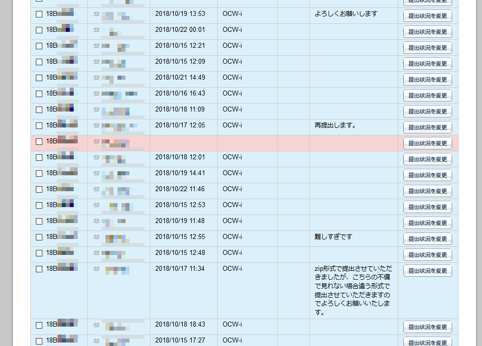

ガイダンス - 本授業について
2020年10月1日 (月)
0. はじめに
0.1. 講師・TA紹介
講師
- 名前: 新山 祐介 (しんやま ゆうすけ)
- 1994年: 東工大 第5類 入学
- 1998年: 東工大 情報理工学院 入学
- 2001年: 米ニューヨーク大学 博士課程
- 2007年: 日本に帰国、都内の某中小企業にプログラマーとして就職
業務内容: 視覚障害者の支援機器を開発。
(東工大の同期はみんな一流メーカーに入社した)
- 2020年: 超スマート社会卓越教育院に所属
- 研究テーマ: プログラムの自動解析。
- 趣味: 旅行、ゲーム開発、Youtube動画翻訳。
- ボランティアで視覚障害者の生徒にプログラミングを教えている。
TAの方々
0.2. 質問する方法
0.3. 成績評価の方法
- 課題提出により評価する。
- 小課題 (各5点×7 = 35点)。
- 中課題 (15点+15点+20点 = 50点)。
- 期末レポート (20点)。
(101点以上の点数は100点に切り詰めるものとする。)
- 出席しなくても課題さえできれば点数を与える。
(意志が弱い人にはおすすめしない。)
- 課題はすべて OCW-i によって提出すること。
締め切りを過ぎたものは受けつけない。
不正行為に関する警告
課題で他人の答えを写す、試験中に別の答案を見るなどの不正行為は、
大学においては (オリンピックのドーピングと同様に) 重罪である。
これに違反した場合、単位の剥奪、停学 (最悪の場合) などがありうる。
不正行為をした科目の点数は 0 点になる。
- やり方について友達と相談するのはOK。
- 答えを直接教えたり、見たりするのはダメ。
- 見せたほうも同罪。
したがって、うっかり見せないよう注意すること (自分の安全のため)。
- 「ただの脅し文句で、実際に罰されたりはしないだろう」と思ったら大間違い。
過去にそういった例があります。
- 逆に課題と直接関係ない部分は、いくらでも聞いてOK。
むしろ、PCの使い方とかは積極的に友達や先生の技を盗むこと。
なお、OCW-i に提出する際のコメント欄はほとんど読まないので、
あまり重要なことは書かないこと。(読みとばす危険性がある)

1. コンピュータ (計算機) とは何か?
1.1. コンピュータの機能
情報とは?
- メールの文章
- 写真
- 動画
- 航空券の予約、電子カルテ、ハイスコアなど
1.2. コンピュータの使用例
現代の日本社会では、大量の情報処理がなければ日常生活が成り立たない。
- セブンイレブンでおにぎりを買う。
- コンビニ1店舗に約 3,000種類の商品。つねに補給される。
- セブンイレブンで1年間に売れるおにぎりは 16億個。
(曜日・行事の有無・天気によって個数は毎日変わる)
- コンビニは全国に50,000店舗。
- 1つの工場から約1,000店舗に出荷。
- 天気予報。
- アメダスは全国に1300箇所。10分ごとに更新。1日に合計312,000個のデータ。
- 過去10年間の観測結果… 約11億個のデータ。
- 写真をLINEで送る。
- 電車に乗る。
- JR東日本における 1日あたりの列車本数 約13,000本。
- 郵便・宅急便を受けとる。
- 1年間の荷物 13億個。
- 宅配便の営業所は全国に260,000箇所。
- 1年間の郵便物 250億通。
1.3. コンピュータの歴史
2. コンピュータ サイエンス (計算機科学) とは何か?
- いわゆる「自然科学」ではない (自然を研究しない)。
- どちらかといえば数学に近い。
- 数学 … 抽象的な実体 (数、関数など) について学ぶ。
- コンピュータサイエンス … 抽象的なプロセス (過程) について学ぶ。
- コンピュータがなくても「コンピュータサイエンス」はありうる!
2.1. コンピュータサイエンス的な考え方の例
- 分割統治法
- 国家、軍隊、会社 etc.
- 各部分に「リーダー」をおく。
- 各部分はさらに細かい部分に分けて管理される。
- 番号による管理
- たとえば全国は都道府県ごと 47の中央郵便局に分かれているとしよう…
- 宛て先に「中野区松が丘」と書いてあったら、何県の郵便局?
- 宛て先に「中野市松川」と書いてあったら、何県の郵便局?
- 郵便番号は、ある意味、人間を機械として扱っている。
これにより効率と正確さが確保される。
- 並列化
- 選挙の大量の票を集計する。
- 大量のものに連番をふる。
- 閉塞
- 単線の列車で安全を確保するための方法。
- 通信や電気系統が壊れても 100% 動作する。
これらのものに共通する特徴は「効率化」「信頼性の確保」である。
2.2. 本科目を学ぶことのメリット
- コンピュータ関連の企業でなくても
「コンピュータサイエンスのわかる学生」を欲しがる。なぜでしょう?
- 組織・社会における「プロセス」を厳密に考えられるようになる。
- 効率さ・正確さを確保するための考え方が学べる。
- 「プログラミング言語を習える」のは、副次的なメリットにすぎない。
- プログラミング言語はあくまで「考えを表現する」ためのもの。
- 何百種類もある。ひとつ覚えても、次々と新しい言語が発明される。
(プログラミング言語にも流行がある。)
- 実際に動くシステムを作るためには、
プログラミング言語以外にもいろいろな知識が必要である。
本授業でやること
- コンピュータサイエンス的な考え方を学ぶために、
コンピュータを使って練習する。
- 本授業では、プログラミング言語
Python を使う。
- 繰り返すが、特定のプログラミング言語の知識そのものに
大した重要性はない。
(本授業で習うプログラミング言語が 10年後に時代遅れになっている可能性はある。)
- コンピュータサイエンス第二まで終えた人は、
「プログラミングがちょっとできます」と言う資格がある。
本授業でやらないこと
- 特定のシステム (ゲーム、アプリ等) の作り方。
- たとえばスマートフォン用のゲームを作るためには、
プログラミング言語に加えて、画面表示やOSの機能などの
広範囲な知識が必要。
Yusuke Shinyama